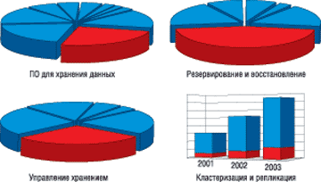
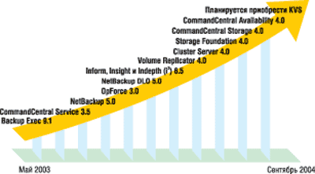
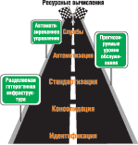
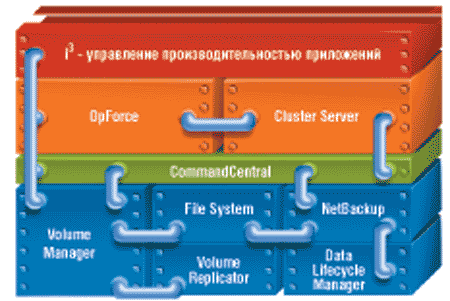

Андрей Колесов
До недавнего времени компания Veritas Software (http://www.veritas.com) была известна на ИТ-рынке в основном как поставщик ПО для управления устройствами хранения информации, защиты и резервного копирования данных (рис. 1). По данным IDC, ей принадлежит около 40% мирового рынка ПО резервного копирования и восстановления данных и 70% рынка средств виртуализации хранения. Сосредоточившись на подобных специализированных решениях, Veritas остается одним из крупнейших поставщиков ПО в мире по объемам продаж (более 1,75 млрд долл. в год).
|  |
| Рис. 1. Доля Veritas в различных сегментах рынка ПО. Источник: исследование Gartner Group, 2004 г.; внутренние финансовые отчеты Veritas.
|
Однако в последние годы компания активно расширяет спектр предлагаемых ею программных продуктов, формируя собственную комплексную платформу управления ИТ-ресурсами предприятия. Еще несколько лет назад популярными на рынке стали ее решение для кластеризации Veritas Cluster и продукты виртуализации хранения данных. В поле бизнеса компании попали также ПО для автоматизации ИТ-инфраструктуры (CommandCentral) и повышения производительности приложений (семейство Veritas i3).
По мнению Veritas, преимущество ее решений по сравнению с аналогичными продуктами ведущих поставщиков серверов и систем хранения связано с независимостью от аппаратной и программной платформы, что особенно важно для крупных заказчиков, у которых в информационной системе зачастую используется "зоопарк" из оборудования разных производителей. Именно поэтому особый акцент делается на технологии виртуализации применительно к аппаратному обеспечению, ОС и приложениям.
На пути реализации Utility Computing
Расширение спектра продуктов Veritas (рис. 2) идет двумя способами: во-первых, за счет усовершенствования имеющихся продуктов и создания новых собственными силами, во-вторых, за счет приобретения поставщиков специализированных решений. Одним из последних шагов в этом направлении стало объявление в начале нынешней осени о намерении купить компанию KVS, одного из ведущих поставщиков средств архивирования электронной почты.
|  |
| Рис. 2. Предложения Veritas последнего года: программные продукты, образующие строительные блоки для поддержки ресурсных вычислений.
|
Формирование собственной комплексной платформы управления ИТ-инфраструктурой — вполне логичное следствие развития бизнеса крупной софтверной компании и соответствует общим тенденциям изменения потребностей заказчиков и самой ИТ-отрасли. Однако на пути создания такого ПО разработчику предстоит решить целый ряд серьезных задач, связанных, с одной стороны, с унификацией и интеграцией программных продуктов, а с другой — с четким позиционированием предлагаемых средств для своих заказчиков и партнеров.
В решении этих проблем Veritas сделала ставку на концепцию Utility Computing, для описания которой в русском переводе используются два термина — "ресурсные вычисления" или "коммунальные вычисления". В последнее время данная методология достаточно широко обсуждается в зарубежной и отечественной литературе (см., например, статью "Рынок, который объединяет", «BYTE/Россия» N 10’2004, c. 36). Поэтому здесь мы только подчеркнем, что Utility Computing — это следствие эволюционного развития информационных технологий, и перечислим основные ее положения, а именно:
- ориентация на применение распределенных неоднородных вычислительных систем с использованием Интернет-технологий;
- широкое использование средств автоматического управления ИТ-инфраструктурой, в том числе для оптимизации вычислений, автономной работы и самовосстановления;
- модель организации вычислений, которая представляет собой не «технологию ради технологии», но жестко ориентирована на решение ключевых бизнес-задач предприятий. Подход к организации ИТ-услуг как к самостоятельному бизнесу;
- вся ИТ-инфраструктура (аппаратура, коммуникации, ПО) рассматривается как единый комплекс, но состоящий из компонентов. Заказчик имеет возможность гибкого выбора и адаптации необходимых средств под свои конкретные нужды, с учетом будущего коррекции и развития бизнеса.
С точки зрения заказчика, реализация концепции ресурсных вычислений должна включать пять основных шагов (рис. 3). Здесь идентификация предполагает учет и использование существующих ресурсов; консолидация — консолидацию не полностью задействованных ресурсов и приложений. Стандартизация проводится на основе лучших в своем классе решений и продуктов. Автоматизация подразумевает динамическое совместное использование и объединение в пулы на основе политик, а службы — замеры потребления для распределения расходов.
|  | Рис. 3. Пять шагов на пути реализации концепции ресурсных вычислений.
|
Компания Veritas Software — не единственная, кто реализует подход Utility Computing; собственные версии этой концепции есть у всех основных ИТ-поставщиков, каждый из которых расставляет свои акценты при ее реализации.
В силу исторических причин технологии Veritas проходят от автономного хранения данных через информационную инфраструктуру и оптимизацию оборудования к производительности жизненно важных приложений, предоставляя ИТ-подразделениям средства контроля над информацией, ликвидации узких мест и обеспечения высокой доступности ключевых систем и приложений.
При этом Veritas выделяет три основных аспекта управления ПО: доступность, производительность и автоматизацию. Продукты, связанные с доступностью, отвечают за хранение и получение данных, а также за доступность приложений и данных для бизнеса. Решения из сферы производительности позволяют организации обеспечить качество работы приложений, информационных систем и данных на уровне, предусмотренном соглашениями, повышая производительность серверов и устройств хранения, а также прогнозируя, идентифицируя и устраняя возникшие проблемы. Средства автоматизации сокращают вероятность возникновения операторских ошибок и предоставляют сотрудникам ИТ-подразделения инструменты, позволяющие сократить время, затрачиваемое на «ликвидацию пожаров», обеспечивая непрерывность работы важных для бизнеса приложений.
В настоящее время портфель продуктов Veritas предоставляет организациям исчерпывающий ряд инструментов для построения законченных решений в области доступности, производительности и автоматизации на всех уровнях — от рабочих станций до систем хранения и архивирования (см. таблицу). Кроме того, отдельную группу составляют традиционные для Veritas продукты для защиты и архивирования данных. Ниже мы коротко охарактеризуем эти продукты в разбиении по соответствующим группам.
Портфель продуктов Veritas в области доступности, производительности и автоматизации
| Уровни ИТ-инфраструктуры | Доступность | Производительность | Автоматизация |
| Приложения | Cluster Server UpScale | i3 | CommandCentral Service MicroMeasure Data Lifecycle Manager |
| Серверы | Cluster Server Bare Metal Restore | i3 | OpForce CommandCentral Availability |
| Память и данные | Volume Replicator Storage Foundation NetBackup Backup Exec | i3 Storage Foundation for Database | CommandCentral Storage StorageCentral Storage Foundation |
Архивирование и защита данных
Данные — ценный актив любой компании, но сегодня информационные системы, где они циркулируют, подвержены множеству угроз, неподвластных компаниям. Неисправности противопожарного оборудования и пожары, засорение канализации, затопление, вызванное бурей или пожаром, кражи данных, вирусы — и это еще не все бедствия, угрожающие сохранности информации. К тому же законодательные нормы требуют хранения отдельных видов данных в течение определенного числа лет, а порой и десятилетий, — и здесь особое значение приобретают технологии архивации и поиска документов.
Что касается защиты данных, она имеет значение как в краткосрочной, так и в долгосрочной перспективе. Важная составляющая защиты ключевых данных и информации — резервное копирование файлов.
Backup Exec
Veritas Backup Exec — это решение для резервного копирования и восстановления, обеспечивающее полную и экономически эффективную защиту серверных сред Windows и NetWare. Web-консоль администрирования и графический интерфейс пользователя с удобными мастерами упрощают установку пакета и управление им. Высокопроизводительные агенты и опции (Desktop and Laptop Option) обеспечивают быстрое развертывание защиты данных на настольных и переносных компьютерах и серверах. Чтобы упростить повседневное администрирование, имеются специализированные средства автоматической защиты приложений Microsoft Exchange Server, Microsoft SQL Server и Lotus Notes. Продукт реализован в трех вариантах — для Windows (BEWS), для NetWare и для Small Business Server.
DirectAssist
Бесплатно распространяемое через Интернет приложение Veritas DirectAssist должно улучшить поддержку решений Backup Exec for Windows Servers, помогая локализовать и устранять возникающие неполадки. Программа диагностирует среду клиента, выполняя мгновенные копии текущих конфигураций; в случае неполадок она обнаруживает изменения в конфигурациях и проводит поиск возможных решений. Если необходимо подать запрос в службу технической поддержки, DirectAssist создаст электронную запись всей необходимой информации о происшествии, включая файлы журналов ошибок, относящиеся к проблеме.
NetBackup
Продукт Veritas NetBackup (NBU, варианты Enterprise Server и Server) реализует защиту данных корпоративного уровня в средах Unix, Windows, Linux и NetWare. Интуитивно понятный графический интерфейс помогает управлять всеми аспектами резервного копирования и восстановления в организации, обеспечивая внедрение унифицированных политик резервного копирования. NetBackup предоставляет средства управления всеми современными носителями данных (ленточными, дисковыми и оптическими), включая возможность маркировки лент, создание пула ленточных носителей, совместный доступ к устройствам, создание отчетов о состоянии носителей и приводов, поддержку штрих-кодов. Кроме того, в решении предусмотрены специализированные опции резервного копирования и восстановления для Oracle, SAP R/3, Microsoft SQL Server, Microsoft Exchange, Microsoft SharePoint Portal Server, IBM DB2, Lotus Notes/Domino, Sybase и Informix. Для управления несколькими доменами NetBackup служит инструмент Global Data Manager.
Bare Metal Restore
Приложение Veritas Bare Metal Restore (BMR) автоматизирует процесс восстановления сервера, исключая необходимость вручную переустанавливать ОС и настраивать оборудование. В сущности, оно просто делает копию целого сервера с ОС и всеми приложениями и хранит ее в образе, создаваемом NetBackup. Через простой Web-интерфейс с помощью программ-мастеров можно параллельно выполнять восстановление нескольких серверов. Единое решение для нескольких платформ позволяет обойтись без составления отдельных методик восстановления для каждой платформы.
Data Lifecycle Manager
Veritas Data Lifecycle Manager (DLM) помогает компаниям выполнять требования законодательства, создавая для данных контрольный след с дополнительной информацией: кто создал данные, где создал, кто их читал, кто изменял, когда это происходило, где находятся данные сейчас, какие правила к ним применяются. DLM также снижает общую стоимость владения данными, автоматически реализуя политики управления ими в соответствии с требованиями к данным и атрибутами хранения. С помощью DLM данные по мере возможности автоматически переносятся с более дорогих носителей на более дешевые.
Работа DLM прозрачна для пользователей и приложений — по сути, эта программа контролирует все, что происходит с данными от их создания до удаления. Единая технология поиска и индексации контента (основанная не на ключевых словах, а на алгоритмических признаках) делает приложение более «интеллектуальным», чем большинство поисковых машин, и снижает затраты времени и средств на поиск файлов. DLM интегрируется с NetBackup и Backup Exec for Windows, обеспечивая перестройку индексов резервных копий. В нем предусмотрены агенты для Windows и Microsoft Exchange Server, а архитектура решения позволяет ему взаимодействовать с множеством приложений и утилит архивирования для работы с разнообразными типами данных.
Desktop and Laptop Option
Опция Veritas NetBackup and Backup Exec Desktop and Laptop Option (DLO) обеспечивает защиту и синхронизацию данных, хранящихся на персональных и переносных компьютерах сотрудников, автоматически копируя информацию с ПК на сетевой сервер или устройство хранения. По оценке компании IDC, доля данных, хранящихся вне серверов, составляет до 60%, причем эти данные обычно находятся на ключевых этапах своего жизненного цикла.
NetBackup Vault Option
Интегрированная с NetBackup опция Veritas NetBackup Vault автоматизирует ротацию ленточных носителей и автономное ведение архивов, организуя сложный и трудоемкий процесс дублирования и внешнего хранения резервных копий. Применявшиеся ранее ручные процессы были чреваты ошибками — ленты порой неверно маркировались, терялись или стирались. С помощью NetBackup Vault клиент может настроить профили, определяющие, какие копии, когда и как следует дублировать, а также когда ленты отправляются во внешнее хранилище для минимизации потерь в аварийных ситуациях. Как правило, в удаленных хранилищах размещаются полные копии, снимаемые с периодичностью около недели. Инкрементное копирование на диски снижает потери данных и ускоряет восстановление. При репликации данные копируются постоянно; тем самым потеря их в случае аварии сводится к минимуму. Еще один аспект необходимости резервного копирования и восстановления данных связан с тем, что при репликации копируются все данные, в том числе вирусы. Это означает, что для решения подобных вопросов требуются другие пути сохранения данных.
Обеспечение высокой доступности
Если данные — один из наиболее ценных активов компании, то они должны быть доступны всегда, когда они нужны. В сегодняшних условиях это зачастую означает работу в круглосуточном режиме, без единого выходного. Как следствие, каждой компании требуется стратегия обеспечения доступности данных, которая образует одну из основных статей расходов на ИТ. Доступность — это возможность гарантировать бесперебойную работу информационной среды. Если, скажем, сервер компании остановится по какой-то причине, должен быть гарантированный механизм продолжения работы в обход этой неисправности. Если компания остановит на какое-то время обработку заказов, последствия могут быть очень серьезными.
Для предоставления ИТ как ресурсной услуги приложения, необходимые бизнесу, должны быть доступны по первому требованию. Как и решения предыдущей группы, продукты Veritas, обеспечивающие высокую готовность, могут служить строительными блоками для построения систем ресурсных ИТ-услуг.
Cluster Server
Veritas Cluster Server (VCS) — это ведущее в отрасли решение для кластеризации открытых систем. Оно объединяет серверы в кластеры, повышая доступность приложений и баз данных (сервисов). При выходе из строя приложения, базы данных или сервера VCS обнаруживает ошибку и предпринимает действия, необходимые для восстановления или переноса служб на другой сервер, который лучше всего способен справиться с поддержкой данного приложения или базы данных. Это решение хорошо подходит и для сокращения запланированных и внеплановых простоев, консолидации серверов (снижает число серверов, необходимых для работы компании), а также эффективного управления приложениями в открытых системах. VCS защищает любые решения — от отдельно взятой важной базы данных до крупнейших кластеров, распределенных по всему миру и выполняющих множество приложений.
Помимо автоматизации процесса исправления сбоев, VCS позволяет проверять планы аварийного восстановления, не прерывая работу пользователей, а также предоставляет средства управления несколькими заданиями на кластере серверов (интеллектуальное управление нагрузкой), обеспечивая максимально эффективное использование ресурсов. Средства кластеризации объединяют серверы и выполняют аварийное переключение приложений в случае выхода сервера из строя.
UpScale
ПО Veritas UpScale, недавно купленное у компании Ejasent, станет интегрированной опцией VCS. Данное решение дает возможность перемещать приложения с одного сервера на другой, не прекращая их работы. UpScale снимает копию приложения и его состояния, сохраняя все текущие установки и данные, и передает их на другой сервер практически в реальном времени таким образом, что пользователи не замечают изменений. Veritas UpScale значительно сокращает для менеджеров ИТ-подразделения время и ресурсы, затрачиваемые на плановые периодические обновления оборудования и обслуживание приложений, практически исключая для пользователей связанные с этим периоды простоя.
CommandCentral Availability
Приложение Veritas CommandCentral Availability (CCA) предназначено для централизованного управления продуктами, обеспечивающими высокую доступность. Это инструмент управления на базе Web, который позволяет персоналу ИТ-отдела контролировать с единой консоли доступность приложений, работающих в географически удаленных информационных центрах, а также предоставляет дополнительные возможности аварийного переключения в пределах территории. Для получения информации о доступности приложений CCA пользуется данными VCS. С помощью этого ПО можно контролировать и администрировать распределенные кластеры VCS, работающие под управлением наиболее распространенных ОС.
Централизованное управление снижает административные расходы любой компании, где имеется более одного кластера. Veritas CommandCentral Availability увеличивает продуктивность труда ИТ-отдела, предоставляя централизованный контроль над кластерами в реальном времени. Администратор также может управлять конфигурацией и изменять ее сразу для нескольких кластеров. Кроме того, Veritas CCA позволяет администраторам быстрее обнаруживать, локализовать и устранять ошибки.
Ранее продукт CCA принадлежал к линейке Global Cluster Manager.
Storage Replicator
Большинство организаций вкладывают средства в защиту данных центральных офисов, но защите для удаленных офисов часто не придают значения. Приложение Veritas Storage Replicator (VSR) разработано для относительно небольших Windows-сред. Оно устраняет ограничения на резервное копирование благодаря эффективной репликации (копированию) данных на центральный резервный сервер — непрерывно или по расписанию. Для поступивших на центральный сервер данных можно выполнить резервное копирование в нормальном режиме, как для данных самого информационного центра. Администратор может оперативно восстанавливать данные по сети, не обременяя администраторов удаленных офисов восстановлением данных с ленточных носителей. Отрицательные отзывы о VSR могут быть обусловлены тем, что компания «выросла» из этого продукта и ей следовало бы перейти на Volume Replicator.
Volume Replicator
Veritas Volume Replicator (VVR) — это корпоративная версия продуктов репликации Veritas. Решение предоставляет основу для обеспечения прозрачной доступности приложений на нескольких территориях в случае стихийных бедствий, ошибок операторов, сбоев энергопитания, локальных аварий или плановых миграций. В основе VVR лежит технология Veritas Volume Manager. Это приложение надежно, эффективно и последовательно реплицирует данные на удаленный сервер по любой сети IP или SAN, как синхронно (в реальном времени), так и асинхронно (обычно по очереди), в средах, где потери данных или длительные простои недопустимы.
Автоматизация систем хранения и серверов
Автоматизация любой операции или управления оборудованием, процессом либо системой дает ряд важных преимуществ. Она сокращает время, которое ИТ-профессионалы вынуждены тратить на рутинные задачи. Она означает, что сотрудник ИТ-отдела больше не обязан быть знатоком всех ОС и оборудования всех поставщиков. Теперь управление данными может стать для организации источником прибыли, ИТ-подразделение превращается из затратного в доходное, а вместо постоянного «тушения пожаров» можно уделять внимание стратегическому развитию. Кроме того, автоматизация уменьшает вероятность возникновения ошибок в результате действий оператора. Портфель Veritas объединяет продукты, нацеленные на минимизацию ошибок оператора и повышение производительности.
CommandCentral Service
Veritas CommandCentral Service CCS призван помочь организации в переходе к ресурсной модели, когда ИТ-подразделение выступает как поставщик ресурсных услуг своим многочисленным клиентам. С помощью CCS можно находить и определять устройства хранения и управлять ими, формулировать и предоставлять ИТ-сервисы клиентам, вести учет и составлять отчетность об уровне обслуживания и использовании ресурсов, а также распределять затраты по сервисам. Таким образом, ПО CCS становится единым интерфейсом между ИТ-отделом и потребителями его услуг.
Уровни обслуживания, определяемые пользователями или клиентами, отображаются на реализации сервисов на основе имеющихся продуктов Veritas и других компаний. В результате деятельность ИТ-отдела становится более прозрачной, лучше поддается учету и в большей степени ориентирована на стратегические цели компании.
MicroMeasure
Продукт Veritas MicroMeasure, купленный у компании Ejasent в начале 2004 г., будет интегрирован в CCS. Это позволит улучшить отчетность об уровнях сервиса на предприятии. MicroMeasure обеспечивает учет и выставление счетов за пользование активами информационного центра, включая серверы, устройства хранения и транзакции приложений, в разбивке по отдельным пользователям и подразделениям.
StorageCentral
Veritas StorageCentral — это инструмент управления устройствами хранения в среде Windows, который автоматически распоряжается выделением и использованием устройств хранения, сокращая время резервного копирования и повышая уровень сервиса. В StorageCentral реализовано управление на основе политик для подключаемых напрямую дисковых систем (DAS), сетевых устройств хранения (NAS) и сетей хранения данных (SAN) на базе Windows.
Этот продукт способен распознавать типы файлов, даже если их пытаются скрыть. Идентифицируя ненужные или нелегальные файлы и удаляя их из системы, CCS может блокировать неразрешенные типы файлов (например, MP3, игры, сценарии и вирусы), выявляя и возвращая в дело потерянное дисковое пространство, снижая объемы данных, подлежащих резервному копированию, и продолжительность копирования. Он позволяет установить в реальном времени квоты на использование устройств хранения Windows общего пользования, а также составлять отчеты в формате HTML об использовании ресурсов и уведомления в реальном времени о превышении квот. Кроме того, он дает пользователям возможность самостоятельно управлять своими устройствами хранения. Veritas StorageCentral применяют более 5000 компаний. Microsoft использует эту технологию для управления квотами в Windows Storage Server 2003.
Storage Foundation
Veritas Storage Foundation сочетает в себе две современные технологии — Veritas Volume Manager (VxVM) и Veritas File System (VxFS), образуя исчерпывающий набор инструментальных средств для управления устройствами хранения в реальном времени. Данное решение позволяет группировать дисковые накопители в логические тома, повышая тем самым коэффициент использования и производительность дисков. Оно помогает исключить простои, связанные с устройствами хранения, за счет совместного использования ресурсов (виртуализации). Например, если у компании есть три сервера, один из которых работает с максимальной загрузкой, то VxVM может с помощью виртуализации перераспределить нагрузку между всеми тремя серверами.
Кроме того, Storage Foundation позволяет администраторам переносить данные между различными ОС и дисковыми массивами, распределять операции ввода-вывода по нескольким каналам для повышения производительности, снижать задержки ввода-вывода (ускоряя работу приложений) и таким образом предотвращать задержки в сети, проводить репликацию (зеркальное копирование) данных на удаленные территории для повышения доступности, а также переносить несущественные или устаревшие данные на менее дорогие носители, не меняя при этом режима доступа к ним для пользователей и приложений.
Storage Foundation for Databases
Veritas Storage Foundation for Databases (предыдущее название Database Editions, DBED) — это интегрированный комплекс современных технологий, как и Veritas Storage Foundation, построенный на базе VxVM и VxFS и содержащий ряд дополнений, облегчающих управление и подключение к базам данных Oracle, IBM DB2 и Sybase. В состав продукта входит средство VCS для автоматического восстановления приложений после сбоев и защиты приложений от плановых и внеплановых простоев.
Функция Quick I/O соединяет управляемость файловых систем с производительностью значительно менее сложных аппаратных устройств. Этот пакет построен на основе инфраструктуры хранения, позволяющей оптимизировать хранение баз данных с помощью виртуализации устройств оперативного хранения и технологии RAID, которая применяется для повышения доступности и скорости записи/чтения дисковых массивов.
FlashSnap
Veritas FlashSnap расширяет возможности Storage Foundation и Storage Foundation for Database. Данное решение создает моментальные образы (копии в реальном времени) файловых систем и томов для удаленной (выполняемой не на исходном сервере или устройстве хранения) обработки и быстрого резервного копирования. Созданные копии томов впоследствии могут передаваться другим процедурам на этом же компьютере — для обработки, резервного копирования или тестирования. Когда том готов к обратному копированию и синхронизации, FlashSnap быстро синхронизирует только измененные блоки. Затем он синхронизирует второй том и готов к следующим операциям. Моментальные образы файловой системы, созданные с помощью FlashSnap, полностью интегрируются с NetBackup, и их можно использовать как мгновенно восстанавливаемые резервные копии, а также как источник для восстановления отдельных файлов пользователями.
OpForce
Для оказания эффективных и экономичных информационных услуг ИТ-подразделению нужна гибкость ресурсов. Приложение Veritas OpForce, купленное у компании Jareva в январе 2003 г., копирует настройки существующего сервера и переносит их на новый, позволяя развертывать дополнительные серверы в считанные минуты вместо нескольких часов (при развертывании вручную). OpForce может добавлять новые серверы в существующую среду или переназначать их из недозагруженной среды туда, где они необходимы. OpForce также автоматизирует процесс настройки сервера, позволяя обойтись без ручной установки ОС и настройки оборудования. Это ПО помогает организовать совместное использование серверных ресурсов. Если приложению не хватает ресурсов для эффективной работы, OpForce может установить новые серверы для этого приложения.
OpForce также позволяет определить, какие серверные ресурсы имеются в организации, и выделить необходимый для запуска определенного приложения их объем из пула ресурсов совместного пользования. Копии, созданные с помощью OpForce, содержат всю программную среду существующего сервера, которая автоматически воспроизводится на новом сервере. Особенно важно, что OpForce может использовать для этого любые серверные аппаратные платформы.
CommandCentral Storage
Пакет Veritas CommandCentral Storage обеспечивает централизованное управление устройствами хранения, позволяя ИТ-отделу выполнять те требования к устройствам хранения, которые предъявляют все более разнообразные и многочисленные приложения. CommandCentral Storage позволяет видеть все ресурсы хранения SAN, NAS и DAS и их производительность с единой консоли. Это означает, что администраторы получают всю нужную информацию, чтобы найти неиспользуемое выделенное место и вернуть неэффективно используемое пространство в систему, тем самым повысив общий уровень использования устройств хранения. Решение управляет устройствами хранения в упреждающем режиме в интересах приложений, позволяя отслеживать объемы и производительность ресурсов, определять и корректировать узкие места, прогнозировать требования к дисковому пространству на ближайшее будущее.
Кроме того, приложение исключает ряд ручных процессов, сводя к минимуму ошибки оператора. Это ПО способно автоматически находить аппаратные ресурсы и приложения, а также инфраструктурные решения, такие, как Veritas NetBackup, Cluster Server и Storage Foundation. Инструменты управления, основанные на политиках, гарантируют соблюдение уровней сервиса, отправляя ИТ-специалистам предупредительные сообщения о неполадках еще до того, как они станут критическими.
Ранее продукт назывался SANPoint Control; включает также продукт Storage Reporter.
Управление производительностью приложений
Сегодня, кроме высокой доступности, организациям необходима круглосуточная работа наиболее важных приложений на оптимальном уровне производительности. Чтобы достичь этого в условиях, когда в данную категорию попадает все больше приложений, нужно каким-то образом контролировать их производительность, а не ждать неизбежных звонков с жалобами на плохую работу.
Пакет Veritas i3 — Inform, Insight и Indepth — позволяет гарантировать непрерывную работу информационных систем на максимуме возможностей (продукты i3 были куплены у компании Precise в июле 2003 г.). Приложения i3 не только выявляют проблемы с производительностью, но и способны провести диагностику и порекомендовать способ решения этих проблем с минимальным вмешательством специалистов ИТ-отдела.
Три этих модуля могут сосуществовать с APM-продуктами (Application Performance Management) других поставщиков, но главная причина разделения i3 на три части — это стремление сделать решение модульным и более удобным для продажи. Veritas i3 состоит из нескольких компонентов, в числе которых решения для ClarifyCRM, J2EE, Oracle, Oracle Applications, PeopleSoft, SAP, Siebel и SQL Server. Вся информация, собранная i3, размещается в едином хранилище Performance Warehouse или базе данных и доступна для составления текущих и исторических отчетов.
Inform
Приложение Veritas Inform уведомляет персонал ИТ-службы о возникновении проблем с производительностью приложений и передает сообщения в реальном времени в графический интерфейс i3 StartPoint. Пакеты Insight и Indepth собирают эту информацию и помещают в единое хранилище. На основании таких данных можно строить исторические отчеты и уведомления о критических ошибках; рассчитывать ключевые показатели производительности, например, время отклика, а также отслеживать их постепенное снижение и выявлять момент, когда необходимо предпринять какие-либо действия.
Insight
Veritas Insight следит за всеми составными частями инфраструктуры, от клиентского места до устройства хранения, и идентифицирует компоненты, вызывающие проблемы с производительностью. Зная распределение времени отклика по технологическим уровням (Web-серверы, серверы приложений, серверы баз данных и устройства хранения), ИТ-специалисты могут сразу определить, на чем следует сконцентрироваться для решения проблем с производительностью.
В состав Veritas Insight также входят инструменты построения отчетов для ряда приложений, в том числе SAP, Oracle, PeopleSoft, Siebel, BEA Tuxedo и J2EE. Эти измерения дают еще более полную и точную информацию, необходимую персоналу ИТ-отдела для решения наиболее сложных вопросов, связанных с производительностью.
Indepth
Veritas Indepth собирает информацию приложений Veritas Inform и Insight, дополнительные подробные сведения технологического характера, а также все данные об инфраструктуре поддержки приложений, а затем с помощью SmarTune выявляет ряд возможных причин и дает рекомендации по их устранению. Поскольку информация собирается в едином хранилище, на ее основании также можно строить исторические тренды и вырабатывать предупреждения в реальном времени.
Перспективы расширения концепции
Практическое воплощение концепции Utility Computing представляет собой долговременный процесс, требующий усилий со стороны как поставщиков ПО, так и заказчиков. По мнению экспертов, в достаточно полном объеме эти идеи будут реализованы в течение ближайших 5—10 лет. Основные задачи разработчиков будут связаны с расширением функциональных возможностей решений и их интеграцией между собой.
Одним из направлений развития портфеля продуктов Veritas будет повышение уровня непосредственного взаимодействия приложений друг с другом. Это может выглядеть примерно так (рис. 4):
- Volume Replicator расширяет тома Volume Manager на любые расстояния по любой сети;
- Volume Manager и File System обеспечивают совместное использование данных и перемещение их между дисковыми системами разных типов;
- NetBackup использует образы FlashSnap для быстрого резервного копирования и восстановления файлов;
- KVS считывает и индексирует данные в архивах для выполнения требований законодательства;
- NetBackup и DLO делают резервные копии данных;
- CommandCentral создает отчеты о резервном копировании с помощью NetBackup;
- CommandCentral создает отчеты о хранении и управляет хранением, использованием файлов и томов (Volume Manager);
- CommandCentral создает отчеты о готовности и управляет готовностью серверов и приложений (Cluster Server);
- OpForce развертывает образы серверов с неповрежденными томами и файлами (Volume Manager);
- OpForce автоматически выделяет ресурсы серверов для кластеров Veritas Cluster;
- i3 считывает данные о производительности из Volume Manager и File System. В следующей версии это ПО будет интегрировано с CommandCentral Service.
|  |
| Рис. 4. Совместная работа приложений Veritas.
|
Кроме того, будет обеспечено максимальное использование общих функций и ресурсов: однократная идентификация, общие инсталляционная программа и менеджер лицензий, единые базы данных, журналы регистрации и пользовательские интерфейсы и т. д.